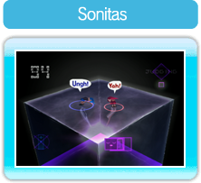
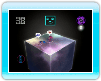

5 |
Presentación |
 |
|
● ¿Qué es YOU, ME, AND THE CUBES?

Las sonitas son unos seres misteriosos que tienen mucho en común con los humanos.
YOU, ME, AND THE CUBES es un juego en el que crearás unos seres, los cuales tendrás que lanzar a cubos gigantes sin que estos se desequilibren. Pon el número indicado de sonitas en un cubo cada vez más complejo para pasar de nivel.
● Desarrollo del juego
La regla básica consiste en colocar un número determinado de sonitas en el cubo. Pero, ojo, el cubo se tambaleará con el peso de las sonitas, así que tendrás que mantenerlo equilibrado para que las sonitas no se caigan.
・
Cómo poner a las sonitas en el cubo
Para crear sonitas, agita dos veces el Wii Remote de arriba a abajo. A continuación, selecciona con el cursor los dos puntos en los que quieras que caigan las sonitas y mueve el Wii Remote hacia abajo para lanzarlas al cubo.

Crea una sonita, apunta al lugar donde quieras lanzarla y oprime

Mueve el Wii Remote hacia abajo para lanzar a la sonita.
|
 |
 |
 |